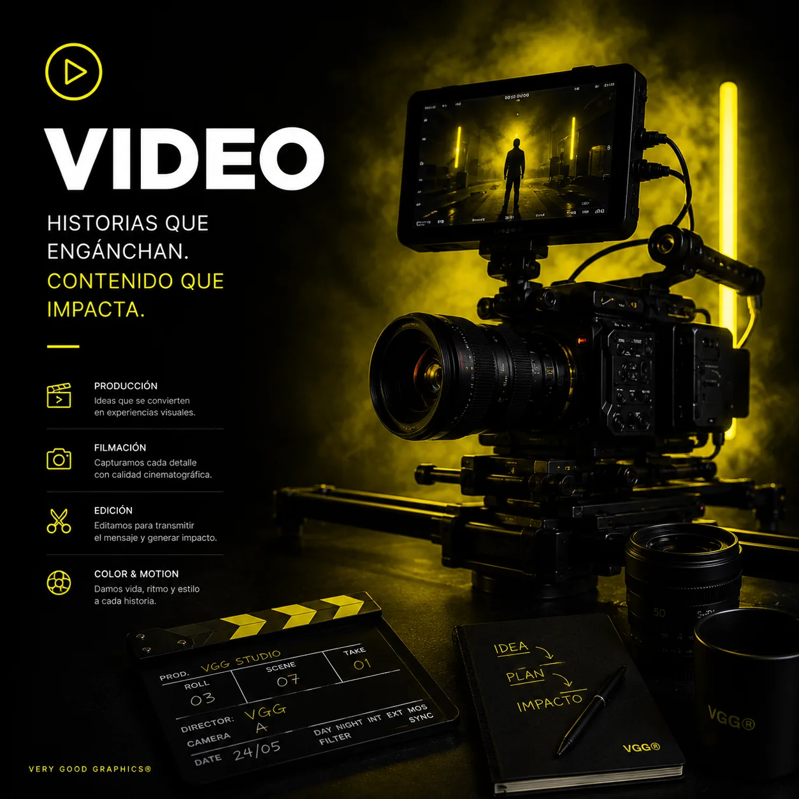

Preproducción
Objetivo, audiencia, concepto, guion, shot list, formatos, agenda y recursos.
Inicio / Servicios / Video
PRODUCCIÓN AUDIOVISUAL COMERCIAL
Convertimos un objetivo de negocio en concepto, producción y un sistema de piezas para campañas, producto, restaurantes, eventos y comunicación corporativa.
Preproducción, filmación, edición, color, audio y adaptaciones · Proyectos en México.

ELIGE POR OBJETIVO
Cada vertical tiene una operación, una frecuencia y un formato de compra distintos. Por eso construimos rutas específicas dentro de un mismo sistema de marca.
Bibliotecas visuales para catálogo, lanzamientos, anuncios y contenido vertical.
MÁS RECURRENTEPlatillos, ambiente, equipo y campañas en sesiones únicas o planes continuos.
FECHA CRÍTICACobertura, recap, entrevistas, fotografía y entregas rápidas con prioridades definidas.
PROCESO VGG
Objetivo, audiencia, concepto, guion, shot list, formatos, agenda y recursos.
Dirección, cámara, iluminación, audio, fotografía y dron cuando aporta valor.
Montaje, color, diseño sonoro, gráficos, revisiones y versiones por canal.
ALCANCE CLARO
Equipo, jornada, locación, talento, arte, postproducción y velocidad de entrega quedan separados para que puedas priorizar sin perder el objetivo.
DRON COMO CAPACIDAD
El dron suma contexto, escala y movimiento, pero no sustituye una producción. Primero validamos regulación, ubicación, clima y seguridad.
Conocer servicio de dronCUÉNTANOS EL OBJETIVO
No necesitas llegar con un guion terminado. Describe qué quieres lograr, dónde se publicará y en qué fecha debe estar listo.